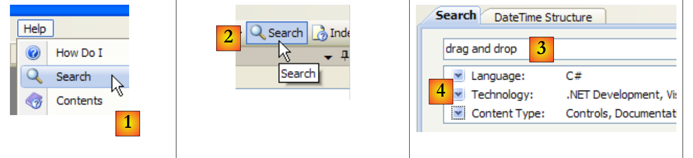
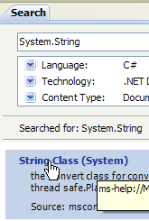
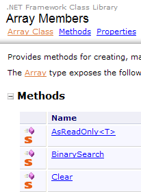
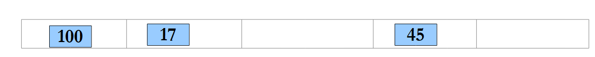

5. فئات .NET شائعة الاستخدام
نقدم هنا بعض الفئات المستخدمة بشكل متكرر من منصة .NET. قبل ذلك، سنوضح لك كيفية الحصول على معلومات حول مئات الفئات المتاحة. هذه المساعدة لا غنى عنها حتى لمطوري C# الأكثر خبرة. جودة المساعدة (سهولة الوصول، التنظيم المفهوم، ملاءمة المعلومات، إلخ) يمكن أن تحدد نجاح بيئة التطوير أو فشلها.
5.1. البحث عن المساعدة بشأن فئات .NET
نقدم هنا بعض النصائح حول كيفية العثور على المساعدة في Visual Studio.NET
5.1.1. المساعدة/المحتويات
 |
- في [1]، اختر خيار قائمة "المساعدة/المحتويات".
- في [2]، اختر الخيار Visual C# Express Edition
- في [3]، شجرة مساعدة C#
- في [4]، هناك خيار مفيد آخر هو .NET Framework، الذي يتيح الوصول إلى جميع فئات .NET Framework.
دعونا نلقي نظرة على عناوين الفصول في مساعدة C#:
 |
- [1]: نظرة عامة على لغة C#
- [2]: سلسلة من الأمثلة حول جوانب معينة من لغة C#
- [3]: دورة تدريبية في لغة C# - يمكن أن تحل محل هذا المستند..
 |
- [4]: لمعرفة المزيد عن لغة C#
- [5]: مفيد لمطوري C++ أو Java. يساعد على تجنب بعض العقبات.
- [6]: عند البحث عن أمثلة، يمكنك البدء من هناك.
 |
- [7]: ما تحتاج إلى معرفته لإنشاء واجهات مستخدم رسومية
- [8]: لتحقيق أقصى استفادة من بيئة التطوير المتكاملة (IDE) Visual Studio Express
 |
- [9]: SQL Server Express 2005 هو نظام إدارة قواعد البيانات (SGBD) عالي الجودة يتم توزيعه مجانًا. وسيتم استخدامه في هذه الدورة.
تعد مساعدة C# جزءًا فقط مما يحتاجه المطور. أما الجزء الآخر فهو المساعدة في التعامل مع مئات الفئات في إطار عمل .NET التي ستسهل عمله.
 |
- [1]: اختر المساعدة في إطار عمل .NET
- [2]: المساعدة موجودة في .NET Framework SDK
- [3]: يعرض فرع مكتبة فئات .NET Framework جميع فئات .NET وفقًا لمساحة الأسماء التي تنتمي إليها
- [4]: مساحة الاسم System التي كانت الأكثر استخدامًا في الأمثلة الواردة في الفصول السابقة
 |
- [5]: في مساحة الاسم System، مثال، هنا البنية DateTime
 |
- [6]: تعليمات حول بنية DateTime
5.1.2. مساعدة/فهرس/بحث
المساعدة التي يقدمها MSDN هائلة وقد لا تعرف أين تبحث. يمكنك عندئذٍ استخدام فهرس المساعدة:
 |
- في [1]، استخدم الخيار [مساعدة/فهرس] إذا لم تكن نافذة المساعدة مفتوحة بالفعل، وإلا فاستخدم [2] في نافذة المساعدة الموجودة.
- في [3]، حدد الحقل الذي سيتم إجراء البحث فيه
- في [4]، حدد ما تبحث عنه، هنا فئة
- في [5]، الإجابة
هناك طريقة أخرى للبحث عن المساعدة وهي استخدام أداة البحث في المساعدة:
 |
- في [1]، استخدم الخيار [Help/Search] إذا لم تكن نافذة المساعدة مفتوحة بالفعل، وإلا فاستخدم [2] في نافذة المساعدة الموجودة.
- في [3]، حدد ما تبحث عنه
- في [4]، قم بتصفية حقول البحث
 |
- في [5]، ستظهر النتيجة في شكل مواضيع مختلفة تم العثور فيها على النص الذي تم البحث عنه.
5.2. سلاسل الأحرف
5.2.1. فئة System.String
 |  |  |
فئة System.String مطابقة للنوع البسيط string. وتحتوي على العديد من الخصائص والأساليب. وفيما يلي بعض منها:
| |
| |
| |
| |
| |
| |
| |
| |
| |
| |
| |
| |
نقطة مهمة يجب ملاحظتها: عندما تُنتج إحدى الطرق سلسلة نصية، فإن هذه السلسلة تكون سلسلة مختلفة عن السلسلة التي طُبقت عليها الطريقة. على سبيل المثال، تُنتج S1.Trim() سلسلة نصية S2، وتكون S1 وS2 سلسلتين مختلفتين.
يمكن اعتبار سلسلة C بمثابة مصفوفة من الأحرف. لذا
- C[i] هو الحرف i من C
- C.Length هو عدد الأحرف في C
انظر المثال التالي:
using System;
namespace Chap3 {
class Program {
static void Main(string[] args) {
string uneChaine = "l'oiseau vole au-dessus des nuages";
affiche("uneChaine=" + uneChaine);
affiche("uneChaine.Length=" + uneChaine.Length);
affiche("chaine[10]=" + uneChaine[10]);
affiche("uneChaine.IndexOf(\"vole\")=" + uneChaine.IndexOf("vole"));
affiche("uneChaine.IndexOf(\"x\")=" + uneChaine.IndexOf("x"));
affiche("uneChaine.LastIndexOf('a')=" + uneChaine.LastIndexOf('a'));
affiche("uneChaine.LastIndexOf('x')=" + uneChaine.LastIndexOf('x'));
affiche("uneChaine.Substring(4,7)=" + uneChaine.Substring(4, 7));
affiche("uneChaine.ToUpper()=" + uneChaine.ToUpper());
affiche("uneChaine.ToLower()=" + uneChaine.ToLower());
affiche("uneChaine.Replace('a','A')=" + uneChaine.Replace('a', 'A'));
string[] champs = uneChaine.Split(null);
for (int i = 0; i < champs.Length; i++) {
affiche("champs[" + i + "]=[" + champs[i] + "]");
}//for
affiche("Join(\":\",champs)=" + System.String.Join(":", champs));
affiche("(\" abc \").Trim()=[" + " abc ".Trim() + "]");
}//Main
public static void affiche(string msg) {
// poster msg
Console.WriteLine(msg);
}//poster
}//class
}//namespace
يؤدي التنفيذ إلى النتائج التالية:
لنلقِ نظرة على مثال جديد:
using System;
namespace Chap3 {
class Program {
static void Main(string[] args) {
// the line to be analyzed
string ligne = "un:deux::trois:";
// field separators
char[] séparateurs = new char[] { ':' };
// split
string[] champs = ligne.Split(séparateurs);
for (int i = 0; i < champs.Length; i++) {
Console.WriteLine("Champs[" + i + "]=" + champs[i]);
}
// join
Console.WriteLine("join=[" + System.String.Join(":", champs) + "]");
}
}
}
ونتيجة الأداء:
تُستخدم طريقة Split في فئة String لوضع عناصر سلسلة أحرف في مصفوفة. تعريف Split المستخدم هنا هو كما يلي:
public string[] Split(char[] separator);
مصفوفة من الأحرف. تمثل هذه الأحرف الأحرف المستخدمة لفصل حقول السلسلة. لذا، إذا كانت السلسلة هي "field1, field2, field3"، فيمكننا استخدام separator=new char[] {','}. إذا كان الفاصل عبارة عن سلسلة من المسافات، فاستخدم separator=null. | |
مصفوفة سلاسل حيث يكون كل عنصر في المصفوفة حقل سلسلة. |
الطريقة Join هي طريقة ثابتة في فئة String :
public static string Join(string separator, string[] value);
مصفوفة من سلاسل | |
سلسلة أحرف تُستخدم كفاصل بين الحقول | |
سلسلة أحرف مكونة من تسلسل عناصر المصفوفة value مفصولة بفاصل السلسلة. |
5.2.2. فئة System.Text.StringBuilder
 |  |  |
ذكرنا سابقًا أن طرق فئة String التي تُطبق على سلسلة أحرف S1 تؤدي إلى إنشاء سلسلة أخرى S2. تتيح لك فئة System.Text.StringBuilder معالجة S1 دون الحاجة إلى إنشاء سلسلة S2. وهذا يحسّن الأداء من خلال تجنب تكاثر السلاسل ذات العمر الافتراضي المحدود للغاية.
تقبل الفئة العديد من المنشئات:
| |
|
يعمل كائن StringBuilder مع كتل من سعة أحرف لتخزين السلسلة الأساسية. الإعداد الافتراضي للسعة هو 16. يُستخدم المنشئ الثالث أعلاه لتحديد سعة الكتلة. يتم تعديل عدد أحرف السعة المطلوبة لتخزين سلسلة S تلقائيًا بواسطة StringBuilder. توجد منشئات لتعيين الحد الأقصى لعدد الأحرف في كائن StringBuilder. بشكل افتراضي، تبلغ هذه السعة القصوى 2,147,483,647.
فيما يلي مثال لتوضيح مفهوم السعة:
using System.Text;
using System;
namespace Chap3 {
class Program {
static void Main(string[] args) {
// str
StringBuilder str = new StringBuilder("test");
Console.WriteLine("taille={0}, capacité={1}", str.Length, str.Capacity);
for (int i = 0; i < 10; i++) {
str.Append("test");
Console.WriteLine("taille={0}, capacité={1}", str.Length, str.Capacity);
}
// str2
StringBuilder str2 = new StringBuilder("test",10);
Console.WriteLine("taille={0}, capacité={1}", str2.Length, str2.Capacity);
for (int i = 0; i < 10; i++) {
str2.Append("test");
Console.WriteLine("taille={0}, capacité={1}", str2.Length, str2.Capacity);
}
}
}
}
- السطر 7: إنشاء كائن StringBuilder بحجم كتلة يبلغ 16 حرفًا
- السطر 8: str.Length هو العدد الحالي للأحرف في السلسلة str. str.Capacity هو عدد الأحرف التي يمكن تخزينها في السلسلة str قبل إعادة تخصيص كتلة جديدة.
- السطر 10: str.Append(String S) يربط السلسلة S من نوع String بالسلسلة str من نوع StringBuilder.
- السطر 14: إنشاء كائن StringBuilder بسعة كتلة تبلغ 10 أحرف
نتيجة التنفيذ:
تُظهر هذه النتائج أن الفئة تتبع خوارزميتها الخاصة لتخصيص كتل جديدة عندما تكون سعتها غير كافية:
- السطران 4-5: زيادة السعة بمقدار 16 حرفًا
- السطران 8-9: زيادة السعة من 16 إلى 32 حرفًا.
فيما يلي بعض أساليب الفئة:
| |
| |
| |
| |
|
إليك مثال:
using System.Text;
using System;
namespace Chap3 {
class Program {
static void Main(string[] args) {
// str3
StringBuilder str3 = new StringBuilder("test");
Console.WriteLine(str3.Append("abCD").Insert(2, "xyZT").Remove(0, 2).Replace("xy", "XY"));
}
}
}
ونتيجتها:
5.3. لوحات
المصفوفات مشتقة من Array :
 |  |  |
تحتوي فئة Array على طرق متنوعة لفرز المصفوفة، والبحث عن عنصر في المصفوفة، وتغيير حجم المصفوفة، وما إلى ذلك. نقدم هنا بعض خصائص وطرق هذه الفئة. وهي جميعها تقريبًا محملة، أي c.a.d. وتوجد في أشكال مختلفة. وترثها كل مصفوفة.
الخصائص
الطرق
|
يوضح البرنامج التالي استخدام بعض طرق Array :
using System;
namespace Chap3 {
class Program {
// search type
enum TypeRecherche { linéaire, dichotomique };
// main method
static void Main(string[] args) {
// reading table elements typed on the keyboard
double[] éléments;
Saisie(out éléments);
// unsorted table display
Affiche("Tableau non trié", éléments);
// Linear search in unsorted table
Recherche(éléments, TypeRecherche.linéaire);
// table sorting
Array.Sort(éléments);
// sorted table display
Affiche("Tableau trié", éléments);
// Dichotomous search in sorted table
Recherche(éléments, TypeRecherche.dichotomique);
}
// entering values for the elements table
// elements: reference on table created by the
static void Saisie(out double[] éléments) {
bool terminé = false;
string réponse;
bool erreur;
double élément = 0;
int i = 0;
// initially, the painting does not exist
éléments = null;
// table element input loop
while (!terminé) {
// question
Console.Write("Elément (réel) " + i + " du tableau (rien pour terminer) : ");
// reading the answer
réponse = Console.ReadLine().Trim();
// end of input if string empty
if (réponse.Equals(""))
break;
// input verification
try {
élément = Double.Parse(réponse);
erreur = false;
} catch {
Console.Error.WriteLine("Saisie incorrecte, recommencez");
erreur = true;
}//try-catch
// if no error
if (!erreur) {
// one more element in the table
i += 1;
// resize table to accommodate new element
Array.Resize(ref éléments, i);
// insert new element
éléments[i - 1] = élément;
}
}//while
}
// generic method for displaying a picture's elements
static void Affiche<T>(string texte, T[] éléments) {
Console.WriteLine(texte.PadRight(50, '-'));
foreach (T élément in éléments) {
Console.WriteLine(élément);
}
}
// recherche d'an element in the array
// elements: array of real
// TypeRecherche: dichotomous or linear
static void Recherche(double[] éléments, TypeRecherche type) {
// Search
bool terminé = false;
string réponse = null;
double élément = 0;
bool erreur = false;
int i = 0;
while (!terminé) {
// question
Console.WriteLine("Elément cherché (rien pour arrêter) : ");
// reading-checking response
réponse = Console.ReadLine().Trim();
// finished?
if (réponse.Equals(""))
break;
// check
try {
élément = Double.Parse(réponse);
erreur = false;
} catch {
Console.WriteLine("Erreur, recommencez...");
erreur = true;
}//try-catch
// if no error
if (!erreur) {
// on cherche l'element in the table
if (type == TypeRecherche.dichotomique)
// dichotomous search
i = Array.BinarySearch(éléments, élément);
else
// linear search
i = Array.IndexOf(éléments, élément);
// Display response
if (i >= 0)
Console.WriteLine("Trouvé en position " + i);
else
Console.WriteLine("Pas dans le tableau");
}//if
}//while
}
}
}
- السطور 27-62: تلتقط الطريقة Input عناصر المصفوفة elements التي تمت كتابتها على لوحة المفاتيح. وبما أنه لا يمكننا تحديد حجم المصفوفة مسبقًا (لا نعرف حجمها النهائي)، يتعين علينا تغيير حجمها لكل عنصر جديد (السطر 57). كان من الممكن استخدام خوارزمية أكثر كفاءة لتخصيص مساحة للمصفوفة في مجموعات من N عنصر. ومع ذلك، لم يتم تصميم المصفوفة لتغيير حجمها. من الأفضل التعامل مع هذه الحالة باستخدام قائمة (ArrayList، List<T>).
- السطور 75-113: الطريقة Search للبحث في عناصر الجدول عن عنصر تم كتابته على لوحة المفاتيح. يختلف وضع البحث اعتمادًا على ما إذا كان الجدول مرتبًا أم غير مرتب. بالنسبة لمصفوفة غير مرتبة، يتم إجراء بحث خطي باستخدام IndexOf في السطر 106. بالنسبة لجدول مرتب، يتم إجراء بحث ثنائي باستخدام BinarySearch في السطر 103.
- السطر 18: الجدول عبارة عن عناصر مرتبة. نستخدم ici، وهو نوع من Spell يحتوي على معلمة واحدة فقط: المصفوفة المراد فرزها. علاقة الترتيب المستخدمة لمقارنة عناصر المصفوفة هي إذن العلاقة الضمنية لهذه العناصر. في حالة Ici، تكون العناصر رقمية. يتم استخدام الترتيب الطبيعي للأرقام.
نتائج الشاشة هي كما يلي:
5.4. مجموعات عامة
بالإضافة إلى المصفوفات، هناك فئات متنوعة لتخزين مجموعات العناصر. توجد إصدارات عامة في مساحة الاسم System.Collections.Generic وإصدارات غير عامة في System.Collections. نقدم هنا مجموعتين عامتين شائعتين الاستخدام: القائمة والقاموس.
قائمة المجموعات العامة هي كما يلي:

5.4.1. فئة List<T> العامة
تسمح لك الفئة System.Collections.Generic.List<T> بتنفيذ مجموعات من الكائنات من النوع T التي يتغير حجمها أثناء تنفيذ البرنامج. يمكن معالجة كائن من النوع List<T> تقريبًا مثل المصفوفة. وبالتالي، يُشار إلى العنصر i في القائمة l بـ l[i].
هناك أيضًا نوع قائمة غير عام: ArrayList قادر على تخزين مراجع لأي كائن. ArrayList مكافئ وظيفيًا لـ List<Object>. يبدو كائن ArrayList كما يلي:
 |
في الأعلى، تشير العناصر 0 و 1 و i في القائمة إلى كائنات من أنواع مختلفة. يجب إنشاء الكائن أولاً قبل إضافة مرجع له إلى قائمة ArrayList. على الرغم من أن ArrayList تخزن مراجع الكائنات، إلا أنه من الممكن تخزين الأرقام. يتم ذلك من خلال آلية تسمى Boxing : يتم تغليف الرقم في كائن O من نوع Object ويتم تخزين مرجع O في القائمة. هذه الآلية شفافة للمطور. يمكنك كتابة :
سيؤدي هذا إلى النتيجة التالية:
 |
في المثال أعلاه، تم تغليف الرقم 4 في كائن O وتم تخزين مرجع O في القائمة. لاسترداده، اكتب:
int i = (int)liste[0];
تسمى عملية Object -> int بـ Unboxing. إذا كانت القائمة تتكون بالكامل من int، فإن إعلانها كـ List<int> يحسن الأداء. في الواقع، يتم بعد ذلك تخزين الأرقام من النوع int في القائمة نفسها وليس في Object خارج القائمة. لم تعد عمليات Boxing / Unboxing تحدث.
 |
بالنسبة لكائن List<T> أو إذا كان T فئة، فإن القائمة تخزن مرة أخرى مراجع إلى كائنات من النوع T :
 |
فيما يلي بعض خصائص وأساليب القوائم العامة:
الخصائص
|
الطرق
| |
| |
لنعد إلى المثال السابق الذي يحتوي على كائن من نوع Array ونعالجه الآن باستخدام كائن من نوع List<T>. ونظرًا لأن القائمة هي كائن قريب من المصفوفة، فإن التغييرات في الكود طفيفة للغاية. وسنقدم فقط التغييرات الأكثر بروزًا:
using System;
using System.Collections.Generic;
namespace Chap3 {
class Program {
// search type
enum TypeRecherche { linéaire, dichotomique };
// main method
static void Main(string[] args) {
// play list items typed on keyboard
List<double> éléments;
Saisie(out éléments);
// number of elements
Console.WriteLine("La liste a {0} éléments et une capacité de {1} éléments", éléments.Count, éléments.Capacity);
// display unsorted list
Affiche("Liste non triée", éléments);
// Linear search in unsorted list
Recherche(éléments, TypeRecherche.linéaire);
// list sorting
éléments.Sort();
// sorted list display
Affiche("Liste triée", éléments);
// Dichotomous search in sorted list
Recherche(éléments, TypeRecherche.dichotomique);
}
// enter values for the items list
// elements: reference to the list created by the
static void Saisie(out List<double> éléments) {
...
// initially, the list is empty
éléments = new List<double>();
// list item entry loop
while (!terminé) {
...
// if no error
if (!erreur) {
// one more item in the list
éléments.Add(élément);
}
}//while
}
// generic method for displaying the elements of an enumerable object
static void Affiche<T>(string texte, IEnumerable<T> éléments) {
Console.WriteLine(texte.PadRight(50, '-'));
foreach (T élément in éléments) {
Console.WriteLine(élément);
}
}
// search for an item in a list
// elements: list of real numbers
// TypeRecherche: dichotomous or linear
static void Recherche(List<double> éléments, TypeRecherche type) {
...
while (!terminé) {
...
// if no error
if (!erreur) {
// search for the element in the list
if (type == TypeRecherche.dichotomique)
// dichotomous search
i = éléments.BinarySearch(élément);
else
// linear search
i = éléments.IndexOf(élément);
// Display response
...
}//if
}//while
}
}
}
- الأسطر 46-51: تحتوي الطريقة العامة Poster<T> على معلمتين:
- المعلمة الأولى هي نص سيتم كتابته
- المعلمة الثانية هي كائن ينفذ الواجهة العامة IEnumerable<T>:
تعتبر بنية foreach( T element in elements) الواردة في السطر 48 صالحة لأي كائنات من نوع elements تنفذ واجهة IEnumerable. وتنفذ الجداول (Array) والقوائم (List<T>) واجهة IEnumerable<T>. كما أن فئة Poster مناسبة بشكل متساوٍ لعرض الجداول والقوائم.
نتائج تنفيذ البرنامج هي نفسها كما في المثال الذي يستخدم Array.
5.4.2. فئة Dictionary<TKey,TValue>
تُستخدم فئة System.Collections.Generic.Dictionary<TKey,TValue> لتنفيذ قاموس. يمكن اعتبار القاموس مصفوفة ذات عمودين:
المفتاح | القيمة |
المفتاح 1 | القيمة1 |
المفتاح 2 | القيمة 2 |
.. | ... |
في الفصل الدراسي، مفاتيح القاموس Dictionary<TKey,TValue> هي Tkey، وأنواع القيم هي TValue. المفاتيح فريدة، أي أنه لا يمكن أن يكون هناك مفتاحان متطابقان. قد يبدو هذا القاموس كما يلي إذا كانت الأنواع TKey و TValue تمثل فئات:
 |
يتم تحديد القيمة المرتبطة بالمفتاح C في القاموس D بواسطة الترميز D[C]. هذه القيمة قابلة للقراءة والكتابة. وبالتالي، يمكننا كتابة:
إذا لم يكن المفتاح c موجودًا في القاموس D، فإن التقييم D[c] يطلق استثناءً.
فيما يلي الطرق والخصائص الرئيسية لـ Dictionary<TKey,TValue>:
المصنعون
الخصائص
الأساليب
انظر إلى البرنامج التالي كمثال:
using System;
using System.Collections.Generic;
namespace Chap3 {
class Program {
static void Main(string[] args) {
// creation of a <string,int> dictionary
string[] liste = { "jean:20", "paul:18", "mélanie:10", "violette:15" };
string[] champs = null;
char[] séparateurs = new char[] { ':' };
Dictionary<string,int> dico = new Dictionary<string,int>();
for (int i = 0; i <liste.Length; i++) {
champs = liste[i].Split(séparateurs);
dico[champs[0]]= int.Parse(champs[1]);
}//for
// number of elements in the dictionary
Console.WriteLine("Le dictionnaire a " + dico.Count + " éléments");
// kEY LIST
Affiche("[Liste des clés]",dico.Keys);
// list of values
Affiche("[Liste des valeurs]", dico.Values);
// list of keys & values
Console.WriteLine("[Liste des clés & valeurs]");
foreach (string clé in dico.Keys) {
Console.WriteLine("clé=" + clé + " valeur=" + dico[clé]);
}
// delete the "paul" key
Console.WriteLine("[Suppression d'une clé]");
dico.Remove("paul");
// list of keys & values
Console.WriteLine("[Liste des clés & valeurs]");
foreach (string clé in dico.Keys) {
Console.WriteLine("clé=" + clé + " valeur=" + dico[clé]);
}
// dictionary search
String nomCherché = null;
Console.Write("Nom recherché (rien pour arrêter) : ");
nomCherché = Console.ReadLine().Trim();
int value;
while (!nomCherché.Equals("")) {
dico.TryGetValue(nomCherché, out value);
if (value!=0) {
Console.WriteLine(nomCherché + "," + value);
} else {
Console.WriteLine("Nom " + nomCherché + " inconnu");
}
// next search
Console.Out.Write("Nom recherché (rien pour arrêter) : ");
nomCherché = Console.ReadLine().Trim();
}//while
}
// generic method for displaying elements of an enumerable type
static void Affiche<T>(string texte, IEnumerable<T> éléments) {
Console.WriteLine(texte.PadRight(50, '-'));
foreach (T élément in éléments) {
Console.WriteLine(élément);
}
}
}
}
- السطر 8: جدول من السلاسل التي ستُستخدم لتهيئة القاموس <string,int>
- السطر 11: قاموس <string,int>
- الأسطر 12-15: تهيئته من السلسلة الموجودة في السطر 8
- السطر 17: عدد إدخالات القاموس
- السطر 19: مفاتيح القاموس
- السطر 21: قيم القاموس
- السطر 29: حذف إدخال من القاموس
- السطر 41: البحث عن مفتاح في القاموس. إذا لم يكن موجودًا، فستقوم TryGetValue بتعيين القيمة 0، لأن القيمة رقمية. لا يمكن استخدام هذه التقنية هنا إلا لأننا نعلم أن القيمة 0 غير موجودة في القاموس.
والنتائج هي كما يلي:
5.5. ملفات نصية
5.5.1. فئة StreamReader
يمكن لفئة System.IO.StreamReader قراءة محتويات ملف نصي. بل إنها قادرة، في الواقع، على التعامل مع تدفقات البيانات التي لا تمثل ملفات. وفيما يلي بعض خصائصها وأساليبها:
الشركات المصنعة
الخصائص
الطرق
إليك مثال:
using System;
using System.IO;
namespace Chap3 {
class Program {
static void Main(string[] args) {
// execution directory
Console.WriteLine("Répertoire d'exécution : "+Environment.CurrentDirectory);
string ligne = null;
StreamReader fluxInfos = null;
// read contents of infos.txt file
try {
// reading 1
Console.WriteLine("Lecture 1----------------");
using (fluxInfos = new StreamReader("infos.txt")) {
ligne = fluxInfos.ReadLine();
while (ligne != null) {
Console.WriteLine(ligne);
ligne = fluxInfos.ReadLine();
}
}
// reading 2
Console.WriteLine("Lecture 2----------------");
using (fluxInfos = new StreamReader("infos.txt")) {
Console.WriteLine(fluxInfos.ReadToEnd());
}
} catch (Exception e) {
Console.WriteLine("L'erreur suivante s'est produite : " + e.Message);
}
}
}
}
- السطر 8: يعرض اسم دليل التنفيذ
- السطران 12 و 27: محاولة / استثناء لمعالجة استثناء محتمل.
- السطر 15: البنية التي تستخدم flux=new StreamReader(...) هي وسيلة لتجنب الحاجة إلى إغلاق الدفق صراحةً بعد استخدامه. يتم ذلك تلقائيًا بمجرد الخروج من نطاق using.
- السطر 15: الملف الذي يتم قراءته يسمى infos.txt. ونظرًا لأنه اسم نسبي، فسيتم البحث عنه في دليل التنفيذ المعروض في السطر 8. وإذا لم يكن موجودًا، فسيتم إلقاء استثناء ومعالجته بواسطة try / catch.
- الأسطر 16-20: يتم قراءة الملف في أسطر متتالية
- السطر 25: يتم قراءة الملف دفعة واحدة
الملف infos.txt هو كما يلي:
ووضعت في المجلد التالي من مشروع C#:
 |
سنكتشف قريبًا أن مجلد «bin/Release» هو مجلد التشغيل عند تشغيل المشروع باستخدام مفتاحي Ctrl+F5.
يؤدي التنفيذ إلى النتائج التالية:
إذا وضعنا في السطر 15 اسم الملف xx.txt، فسنحصل على النتائج التالية:
5.5.2. فئة StreamWriter
تسمح لك فئة System.IO.StreamReader بالكتابة إلى ملف نصي. ومثل StreamReader، فهي في الواقع قادرة على استغلال التدفقات التي ليست ملفات. فيما يلي بعض خصائصها وأساليبها:
الشركات المصنعة
الخصائص
الطرق
انظر المثال التالي:
using System;
using System.IO;
namespace Chap3 {
class Program2 {
static void Main(string[] args) {
// execution directory
Console.WriteLine("Répertoire d'exécution : " + Environment.CurrentDirectory);
string ligne = nu ll; // one line of text
StreamWriter fluxInfos = nu ll; // the text file
try {
// text file creation
using (fluxInfos = new StreamWriter("infos2.txt")) {
Console.WriteLine("Mode AutoFlush : {0}", fluxInfos.AutoFlush);
// read line typed on keyboard
Console.Write("ligne (rien pour arrêter) : ");
ligne = Console.ReadLine().Trim();
// loop as long as the line entered is not empty
while (ligne != "") {
// write line to text file
fluxInfos.WriteLine(ligne);
// read new line on keyboard
Console.Write("ligne (rien pour arrêter) : ");
ligne = Console.ReadLine().Trim();
}//while
}
} catch (Exception e) {
Console.WriteLine("L'erreur suivante s'est produite : " + e.Message);
}
}
}
}
- السطر 13: مرة أخرى، نستخدم صيغة using(stream) لتجنب الحاجة إلى إغلاق التدفق صراحةً باستخدام Close. يتم ذلك تلقائيًا عند استخدام using.
- لماذا try / catch، السطران 11 و 27؟ في السطر 13، يمكننا إعطاء اسم ملف بالصيغة /rep1/rep2/ .../file مع مسار /rep1/rep2/... غير موجود، مما يجعل من المستحيل إنشاء ملف. عندئذٍ سيتم إطلاق استثناء. هناك استثناءات أخرى محتملة (امتلاء القرص، حقوق غير كافية، إلخ)
النتائج هي كما يلي:
تم إنشاء الملف infos2.txt في مجلد bin/Release الخاص بالمشروع:
 |  |
5.6. الملفات الثنائية
تُستخدم الفئتان System.IO.BinaryReader و System.IO.BinaryWriter لقراءة الملفات الثنائية وكتابتها.
لنأخذ التطبيق التالي كمثال:
// syntaxe pg texte bin logs
// on lit un fichier texte (texte) et on range son contenu dans un fichier binaire (bin
// le fichier texte a des lignes de la forme nom : age qu'on rangera dans une structure string, int
// (logs) est un fichier texte de logs
يحتوي الملف النصي على المحتويات التالية:
البرنامج كالتالي:
using System;
using System.IO;
// syntax pg text bin logs
// read a text file (text) and store its contents in a binary file (bin)
// the text file has lines of the form name: age, which will be stored in a structure string, int
// (logs) is a text log file
namespace Chap3 {
class Program {
static void Main(string[] arguments) {
// you need 3 arguments
if (arguments.Length != 3) {
Console.WriteLine("syntaxe : pg texte binaire log");
Environment.Exit(1);
}//if
// variables
string ligne=null;
string nom=null;
int age=0;
int numLigne = 0;
char[] séparateurs = new char[] { ':' };
string[] champs=null;
StreamReader input = null;
BinaryWriter output = null;
StreamWriter logs = null;
bool erreur = false;
// read text file - write binary file
try {
// open text file in read mode
input = new StreamReader(arguments[0]);
// open binary file for writing
output = new BinaryWriter(new FileStream(arguments[1], FileMode.Create, FileAccess.Write));
// open write log file
logs = new StreamWriter(arguments[2]);
// text file processing
while ((ligne = input.ReadLine()) != null) {
// one more line
numLigne++;
// empty line?
if (ligne.Trim() == "") {
// on ignore
continue;
}
// one line name: age
champs = ligne.Split(séparateurs);
// we need 2 fields
if (champs.Length != 2) {
// on logue l'erreur
logs.WriteLine("La ligne n° [{0}] du fichier [{1}] a un nombre de champs incorrect", numLigne, arguments[0]);
// next line
continue;
}//if
// 1st field must be non-empty
erreur = false;
nom = champs[0].Trim();
if (nom == "") {
// on logue l'erreur
logs.WriteLine("La ligne n° [{0}] du fichier [{1}] a un nom vide", numLigne, arguments[0]);
erreur = true;
}
// the second field must be an integer >=0
if (!int.TryParse(champs[1],out age) || age<0) {
// on logue l'erreur
logs.WriteLine("La ligne n° [{0}] du fichier [{1}] a un âge [{2}] incorrect", numLigne, arguments[0], champs[1].Trim());
erreur = true;
}//if
// if no error, write data to binary file
if (!erreur) {
output.Write(nom);
output.Write(age);
}
// next line
}//while
}catch(Exception e){
Console.WriteLine("L'erreur suivante s'est produite : {0}", e.Message);
} finally {
// closing files
if(input!=null) input.Close();
if(output!=null) output.Close();
if(logs!=null) logs.Close();
}
}
}
}
لنركز على العمليات المتعلقة بـ BinaryWriter :
- السطر 34: يتم فتح الكائن BinaryWriter بواسطة
output=new BinaryWriter(new FileStream(arguments[1],FileMode.Create,FileAccess.Write));
يجب أن تكون حجة المنشئ تيارًا. هنا تيار تم إنشاؤه من ملف (FileStream) معطى:
- (تابع)
- الاسم
- العملية المطلوب تنفيذها، هنا FileMode.Create لإنشاء
- نوع الوصول، هنا FileAccess.Write للوصول للكتابة إلى الملف
- السطور 70-73: عمليات الكتابة
تحتوي فئة BinaryWriter على مجموعة من الطرق المتاحة لها تم تحميل Write لكتابة أنواع البيانات البسيطة المختلفة
- السطر 81: عملية إغلاق التدفق
يتم توفير المعلمات الثلاثة للطريقة Main للمشروع (عبر خصائصه) [1] ويتم وضع الملف النصي المراد استخدامه في المجلد bin/Release [2] :
 |
مع الملف التالي [personnes1.txt]:
النتائج هي كما يلي:
 |
- في [1]، الملف الثنائي الذي تم إنشاؤه [personnes1.bin] وملف السجل [logs.txt]. يحتوي الملف الأخير على المحتويات التالية:
سيتم تزويدنا بمحتويات الملف الثنائي [personnes1.bin] بواسطة البرنامج التالي. كما أنه يقبل ثلاث معلمات:
// syntaxe pg bin texte logs
// on lit un fichier binaire bin et on range son contenu dans un fichier texte (texte)
// le fichier binaire a une structure string, int
// le fichier texte a des lignes de la forme nom : age
// logs est un fichier texte de logs
لذلك نقوم بالعملية المعاكسة. نقوم بقراءة ملف ثنائي لإنشاء ملف نصي. إذا كان الملف النصي الناتج مطابقًا للملف الأصلي، فسنعرف أن التحويل من نصي إلى ثنائي ثم إلى نصي قد نجح. الكود هو كما يلي:
using System;
using System.IO;
// syntax pg bin text logs
// read a binary bin file and store its contents in a text file (text)
// the binary file has a structure string, int
// the text file has lines of the form name: age
// logs is a text log file
namespace Chap3 {
class Program2 {
static void Main(string[] arguments) {
// you need 3 arguments
if (arguments.Length != 3) {
Console.WriteLine("syntaxe : pg binaire texte log");
Environment.Exit(1);
}//if
// variables
string nom = null;
int age = 0;
int numPersonne = 1;
BinaryReader input = null;
StreamWriter output = null;
StreamWriter logs = null;
bool fini;
// read binary file - write text file
try {
// open binary file for reading
input = new BinaryReader(new FileStream(arguments[0], FileMode.Open, FileAccess.Read));
// open text file for writing
output = new StreamWriter(arguments[1]);
// open write log file
logs = new StreamWriter(arguments[2]);
// binary file processing
fini = false;
while (!fini) {
try {
// read name
nom = input.ReadString().Trim();
// age reading
age = input.ReadInt32();
// writing to text file
output.WriteLine(nom + ":" + age);
// next person
numPersonne++;
} catch (EndOfStreamException) {
fini = true;
} catch (Exception e) {
logs.WriteLine("L'erreur suivante s'est produite à la lecture de la personne n° {0} : {1}", numPersonne, e.Message);
}
}//while
} catch (Exception e) {
Console.WriteLine("L'erreur suivante s'est produite : {0}", e.Message);
} finally {
// closing files
if (input != null)
input.Close();
if (output != null)
output.Close();
if (logs != null)
logs.Close();
}
}
}
}
لنركز على العمليات المتعلقة بـ BinaryReader :
- السطر 30: يتم فتح الكائن BinaryReader بواسطة
input=new BinaryReader(new FileStream(arguments[0],FileMode.Open,FileAccess.Read));
يجب أن تكون حجة المنشئ تيارًا. هنا تيار تم إنشاؤه من ملف (FileStream) معطى:
- (تابع)
- الاسم
- العملية المطلوب تنفيذها، هنا FileMode.Open لفتح ملف موجود
- نوع الوصول، هنا FileAccess.Read للوصول للقراءة إلى الملف
- السطران 40 و42: عمليات القراءة
تحتوي فئة BinaryReader على مجموعة من الطرق تحت تصرفها ReadXX لقراءة أنواع مختلفة من البيانات البسيطة
- السطر 60: عملية إغلاق التدفق
إذا قمنا بتشغيل البرنامجين على التوالي، حيث يتم تحويل ملف «personnes1.txt» إلى «personnes1.bin»، ثم تحويل «personnes1.bin» إلى «personnes2.txt2»، فسنحصل على النتائج التالية:
 |
- في [1]، تم تكوين المشروع لتشغيل التطبيق الثاني
- في [2]، الحجج التي تم تمريرها إلى Main
- في [3]، الملفات الناتجة عن تنفيذ التطبيق.
محتويات [personnes2.txt] هي كما يلي:
5.7. التعبيرات العادية
تسمح فئة System.Text.RegularExpressions.Regex باستخدام التعبيرات العادية. تتيح لك هذه التعبيرات اختبار تنسيق سلسلة أحرف. على سبيل المثال، يمكننا التحقق من أن السلسلة التي تمثل تاريخًا تكون بتنسيق dd/mm/yy. للقيام بذلك، نستخدم قالبًا ونقارن السلسلة بهذا القالب. في هذا المثال، يجب أن تكون d و m و a أرقامًا. يكون النموذج لتنسيق تاريخ صالح هو "\d\d/\d\d/\d\d" حيث يشير الرمز \d إلى رقم. يمكن استخدام الرموز التالية في النموذج:
الوصف | |
يُشير إلى الحرف التالي على أنه حرف خاص أو حرفي. على سبيل المثال، "n" يقابل الحرف "n". "\n" يقابل حرف السطر الجديد. التسلسل "\" يقابل "\"، بينما "\(" يقابل "(". | |
يتوافق مع بداية الإدخال. | |
يتوافق مع نهاية الإدخال. | |
يتوافق مع الحرف السابق صفر أو أكثر من مرة. على سبيل المثال، "zo*" يتوافق مع "z" أو "zoo". | |
يتطابق مع الحرف السابق مرة واحدة أو أكثر. على سبيل المثال، "zo+" يطابق "zoo"، ولكنه لا يطابق "z". | |
يتطابق مع الحرف السابق صفر أو مرة واحدة. على سبيل المثال، "a?ve?" يتطابق مع "ve" في "lever". | |
يتطابق مع أي حرف واحد، باستثناء حرف السطر الجديد. | |
يبحث في النموذج ويحفظ المطابقة. يمكن استخراج السلسلة الفرعية المطابقة من "المطابقات" باستخدام العنصر [0]...[n]. للعثور على المطابقات التي تحتوي على أحرف بين قوسين ( )، استخدم "\(" أو "\)". | |
يتطابق مع x أو y. على سبيل المثال، "z|foot" يتطابق مع "z" أو "foot". "(z|f)oo" يتطابق مع "zoo" أو "foo". | |
n هو عدد صحيح غير سالب. يتطابق تمامًا مع n مرة من الحرف. على سبيل المثال، "o{2}" لا يتطابق مع "o" في "Bob"، بل مع أول حرفين "o" في "fooooot". | |
n هو عدد صحيح غير سالب. يتطابق مع الحرف n مرة على الأقل. على سبيل المثال، "o{2,}" لا يتطابق مع "o" في "Bob"، بل مع جميع أحرف "o" في "fooooot". "o{1,}" يساوي "o+" و "o{0,}" يساوي "o*". | |
m و n عددان صحيحان غير سالبين. يتوافق مع ما لا يقل عن n وما لا يزيد عن m مرات من الحرف. على سبيل المثال، "o{1,3}" يتوافق مع الأحرف "o" الثلاثة الأولى في كلمة "foooooot" و "o{0,1}" يعادل "o?". | |
مجموعة أحرف. يتوافق مع أحد الأحرف المشار إليها. على سبيل المثال، "[abc]" يتوافق مع "a" في "plat". | |
مجموعة الأحرف السلبية. تتوافق مع أي حرف غير محدد. على سبيل المثال، "[^abc]" تتوافق مع الحرف "p" في كلمة "plat". | |
نطاق الأحرف. يتوافق مع أي حرف في النطاق المحدد. على سبيل المثال، "[a-z]" يتوافق مع أي حرف أبجدي صغير بين "a" و "z". | |
نطاق الأحرف السلبية. يتوافق مع أي حرف غير موجود في النطاق المحدد. على سبيل المثال، "[^m-z]" يتوافق مع أي حرف غير موجود بين "m" و "z". | |
يتوافق مع حد يمثل كلمة، بمعنى آخر، الموضع بين كلمة ومسافة. على سبيل المثال، "er\b" يتوافق مع "er" في "lever"، ولكنه لا يتوافق مع "er" في "verb". | |
يتوافق مع حد لا يمثل كلمة. يتوافق "en*t\B" مع "ent" في "bien entendu". | |
يتوافق مع حرف يمثل رقمًا. يعادل [0-9]. | |
يتوافق مع حرف لا يمثل رقمًا. يعادل [^0-9]. | |
يتوافق مع حرف فاصل الصفحة. | |
يتوافق مع حرف سطر جديد. | |
يتوافق مع حرف إعادة الحامل. | |
يتوافق مع أي مسافة بيضاء، بما في ذلك المسافة، وعلامة الجدولة، وفاصل الصفحة، وما إلى ذلك. يعادل "[ \f\r\t\v]". | |
يتوافق مع أي حرف غير مسافة بيضاء. يعادل "[^ \f\n\r\t\v]". | |
يتوافق مع حرف الجدولة. | |
يتوافق مع حرف الجدولة الرأسية. | |
يتوافق مع أي حرف يمثل كلمة ويشمل شرطة سفلية. يعادل "[A-Za-z0-9_]". | |
يتوافق مع أي حرف لا يمثل كلمة. يعادل "[^A-Za-z0-9_]". | |
يتوافق مع num، حيث num هو عدد صحيح موجب. يشير إلى التطابقات المخزنة. على سبيل المثال، يتوافق "(.)\1" مع حرفين متتاليين متطابقين. | |
يتوافق مع n، حيث n هي قيمة هروب ثمانية. يجب أن تحتوي قيم الهروب الثمانية على 1 أو 2 أو 3 أرقام. على سبيل المثال، "\11" و "\011" كلاهما يتوافق مع حرف tab. "\0011" يعادل "\001" و "1". يجب ألا تتجاوز قيم الهروب الثمانية 256. إذا كان الأمر كذلك، فسيتم أخذ أول رقمين فقط في الاعتبار في التعبير. يسمح باستخدام رموز ASCII في التعبيرات العادية. | |
يتوافق مع n، حيث n هي قيمة هروب سداسية عشرية. يجب أن تحتوي قيم الهروب السداسية العشرية على رقمين. على سبيل المثال، "\x41" يتوافق مع "A". "\x041" يعادل "\x04" و "1". يسمح باستخدام رموز ASCII في التعبيرات العادية. |
يمكن أن يتواجد عنصر في نموذج في نسخة واحدة أو أكثر. دعونا نلقي نظرة على بعض الأمثلة التي تتضمن الرمز \d الذي يمثل رقمًا واحدًا:
نموذج | المعنى |
\d | رقم |
\d? | رقم مكون من 0 أو 1 |
\d* | رقم واحد أو أكثر |
\d+ | رقم واحد أو أكثر |
\d{2} | رقمان |
\d{3,} | 3 أرقام على الأقل |
\d{5,7} | ما بين 5 و 7 أرقام |
الآن دعونا نتخيل نموذجًا قادرًا على وصف التنسيق المتوقع لسلسلة:
سلسلة البحث | النموذج |
تاريخ بتنسيق يوم/شهر/سنة | \d{2}/\d{2}/\d{2} |
وقت بتنسيق hh:mm:ss | \d{2}:\d{2}:\d{2} |
عدد صحيح غير موقّع | \d+ |
سلسلة من المسافات التي قد تكون فارغة | \s* |
عدد صحيح غير موقّع يمكن أن تسبقه أو تتبعه مسافات | \s*\d+\s* |
عدد صحيح يمكن أن يكون موقّعًا ويسبقه أو يتبعه مسافات | \s*[+|-]?\s*\d+\s* |
عدد حقيقي غير موقّع يمكن أن يسبقه أو يتبعه مسافات | \s*\d+(.\d*)?\s* |
عدد حقيقي يمكن أن يكون له إشارة ويسبقه أو يتبعه مسافات | \s*[+|]?\s*\d+(.\d*)?\s* |
سلسلة تحتوي على كلمة just | \bjust\b |
يمكنك تحديد المكان الذي تريد البحث فيه عن النموذج في السلسلة:
model | بمعنى |
^model | يبدأ النموذج السلسلة |
نموذج$ | النموذج ينهي السلسلة |
^model$ | يبدأ النموذج السلسلة وينهيها |
النموذج | يتم البحث عن النموذج في كل مكان في السلسلة، بدءًا من البداية. |
سلسلة البحث | النموذج |
سلسلة تنتهي بعلامة تعجب | !$ |
سلسلة تنتهي بنقطة | \.$ |
سلسلة تبدأ بالتسلسل // | ^// |
سلسلة تحتوي على كلمة واحدة فقط، قد تسبقها أو تليها مسافات | ^\s*\w+\s*$ |
سلسلة تحتوي على كلمتين فقط، قد تسبقها أو تتبعها مسافات | ^\s*\w+\s*\w+\s*$ |
سلسلة تحتوي على كلمة secret | \bsecret\b |
يمكن "استرجاع" المجموعات الفرعية للنموذج. وبهذه الطريقة، لا يمكننا فقط التحقق من أن سلسلة ما تتوافق مع نموذج معين، بل يمكننا أيضًا استرجاع العناصر المطابقة لمجموعات النموذج الفرعية التي تم وضعها بين قوسين من هذه السلسلة. لذا، إذا كنا نحلل سلسلة تحتوي على تاريخ dd/mm/yy ونريد أيضًا استرجاع العناصر dd و mm و yy من هذا التاريخ، فسنستخدم النموذج (dd)/(dd)/(dd).
5.7.1. التحقق من أن سلسلة تتوافق مع نموذج معين
يتم إنشاء كائن من النوع Regex على النحو التالي:
بمجرد إنشاء التعبير النمطي، يمكن مقارنته بالسلاسل باستخدام IsMatch :
إليك مثال:
using System;
using System.Text.RegularExpressions;
namespace Chap3 {
class Program {
static void Main(string[] args) {
// a regular expression template
string modèle1 = @"^\s*\d+\s*$";
Regex regex1 = new Regex(modèle1);
// compare a copy with the model
string exemplaire1 = " 123 ";
if (regex1.IsMatch(exemplaire1)) {
Console.WriteLine("[{0}] correspond au modèle [{1}]", exemplaire1, modèle1);
} else {
Console.WriteLine("[{0}] ne correspond pas au modèle [{1}]", exemplaire1, modèle1);
}//if
string exemplaire2 = " 123a ";
if (regex1.IsMatch(exemplaire2)) {
Console.WriteLine("[{0}] correspond au modèle [{1}]", exemplaire2, modèle1);
} else {
Console.WriteLine("[{0}] ne correspond pas au modèle [{1}]", exemplaire2, modèle1);
}//if
}
}
}
ونتيجة الأداء :
5.7.2. البحث عن جميع مرات ظهور نمط ما في سلسلة
تسترد الطريقة Matches عناصر السلسلة التي تتطابق مع:
تحتوي فئة MatchCollection على خاصية Count وهي عدد العناصر في المجموعة. إذا كانت results كائن MatchCollection، فإن results[i] هي العنصر i من هذه المجموعة وهي من النوع Match. تحتوي فئة Match على خصائص متنوعة، بما في ذلك ما يلي:
- Value : كائن value Match، وهو عنصر يتوافق مع
- Index : الموضع الذي تم العثور فيه على العنصر في السلسلة التي تم استكشافها
انظر المثال التالي:
using System;
using System.Text.RegularExpressions;
namespace Chap3 {
class Program2 {
static void Main(string[] args) {
// several occurrences of the model in the copy
string modèle2 = @"\d+";
Regex regex2 = new Regex(modèle2);
string exemplaire3 = " 123 456 789 ";
MatchCollection résultats = regex2.Matches(exemplaire3);
Console.WriteLine("Modèle=[{0}],exemplaire=[{1}]", modèle2, exemplaire3);
Console.WriteLine("Il y a {0} occurrences du modèle dans l'exemplaire ", résultats.Count);
for (int i = 0; i < résultats.Count; i++) {
Console.WriteLine("[{0}] trouvé en position {1}", résultats[i].Value, résultats[i].Index);
}//for
}
}
}
- السطر 8: النمط المطلوب هو تسلسل من الأرقام
- السطر 10: السلسلة التي سيتم البحث فيها عن هذا النموذج
- السطر 11: جميع عناصر النسخة 3 التي تتحقق من النموذج model2
- الأسطر 14-16: يتم عرضها
نتائج البرنامج هي كما يلي:
5.7.3. استرجاع أجزاء من نموذج
يمكن "استرجاع" مجموعات فرعية من نموذج. وبهذه الطريقة، لا يمكننا فقط التحقق من أن سلسلة ما تتوافق مع نموذج معين، بل يمكننا أيضًا استرجاع العناصر من هذه السلسلة التي تتوافق مع مجموعات فرعية من النموذج التي تم وضعها بين قوسين. لذا، إذا كنا نحلل سلسلة تحتوي على تاريخ dd/mm/yy ونريد أيضًا استرجاع العناصر dd و mm و yy من هذا التاريخ، فسنستخدم النموذج (dd)/(dd)/(dd).
انظر المثال التالي:
using System;
using System.Text.RegularExpressions;
namespace Chap3 {
class Program3 {
static void Main(string[] args) {
// capture elements in the model
string modèle3 = @"(\d\d):(\d\d):(\d\d)";
Regex regex3 = new Regex(modèle3);
string exemplaire4 = "Il est 18:05:49";
// model checking
Match résultat = regex3.Match(exemplaire4);
if (résultat.Success) {
// the copy corresponds to the model
Console.WriteLine("L'exemplaire [{0}] correspond au modèle [{1}]",exemplaire4,modèle3);
// display groups of parentheses
for (int i = 0; i < résultat.Groups.Count; i++) {
Console.WriteLine("groupes[{0}]=[{1}] trouvé en position {2}",i, résultat.Groups[i].Value,résultat.Groups[i].Index);
}//for
} else {
// the copy does not correspond to the model
Console.WriteLine("L'exemplaire[{0}] ne correspond pas au modèle [{1}]", exemplaire4, modèle3);
}
}
}
}
يؤدي تشغيل هذا البرنامج إلى النتائج التالية:
الجديد موجود في الأسطر 12-19:
- السطر 12: تتم مقارنة السلسلة exemplary4 مع regex3 من خلال Match. وهذا يجعل كائن Match موجودًا بالفعل. نستخدم هنا خاصيتين جديدتين لهذه الفئة:
- Success (السطر 13): تشير إلى ما إذا كان هناك تطابق
- Groups (السطران 17 و18): مجموعة حيث
- Groups[0] هو الجزء من السلسلة المطابق للنموذج
- Groups[i] (i>=1) يتوافق مع مجموعة الأقواس رقم i
إذا كان نوع النتيجة هو Match، فإن نوع results.Groups هو GroupCollection ونوع results.Groups[i] هو Group. تحتوي فئة Group على خاصيتين نستخدمهما هنا:
- القيمة (السطر 18): قيمة الكائن Group، وهي العنصر المطابق لمحتوى القوس
- الفهرس (السطر 18): الموضع الذي تم العثور فيه على العنصر في السلسلة المستكشفة
5.7.4. برنامج تعليمي
قد يمثل العثور على التعبير النمطي للتحقق من مطابقة سلسلة نصية لنمط معين تحديًا حقيقيًا. يتيح لك البرنامج التالي فرصة للتدريب. يطلب البرنامج نمطًا وسلسلة نصية، ويشير إلى ما إذا كانت السلسلة تتطابق مع النمط أم لا.
using System;
using System.Text.RegularExpressions;
namespace Chap3 {
class Program4 {
static void Main(string[] args) {
// data
string modèle, chaine;
Regex regex = null;
MatchCollection résultats;
// the user is asked for models and samples to compare with this one
while (true) {
// the model is requested
Console.Write("Tapez le modèle à tester ou rien pour arrêter :");
modèle = Console.In.ReadLine();
// finished?
if (modèle.Trim() == "")
break;
// we create the regular expression
try {
regex = new Regex(modèle);
} catch (Exception ex) {
Console.WriteLine("Erreur : " + ex.Message);
continue;
}
// the user is asked for the specimens to be compared with the model
while (true) {
Console.Write("Tapez la chaîne à comparer au modèle [{0}] ou rien pour arrêter :", modèle);
chaine = Console.ReadLine();
// finished?
if (chaine.Trim() == "")
break;
// we make the comparison
résultats = regex.Matches(chaine);
// success?
if (résultats.Count == 0) {
Console.WriteLine("Je n'ai pas trouvé de correspondances");
continue;
}//if
// the elements corresponding to the model are displayed
for (int i = 0; i < résultats.Count; i++) {
Console.WriteLine("J'ai trouvé la correspondance [{0}] en position [{1}]", résultats[i].Value, résultats[i].Index);
// sub-elements
if (résultats[i].Groups.Count != 1) {
for (int j = 1; j < résultats[i].Groups.Count; j++) {
Console.WriteLine("\tsous-élément [{0}] en position [{1}]", résultats[i].Groups[j].Value, résultats[i].Groups[j].Index);
}
}
}
}
}
}
}
}
إليك مثال:
5.7.5. طريقة Split
لقد سبق أن تعرفنا على هذه الطريقة في String :
|
تسمح لنا طريقة Split في فئة Regex بالتعبير عن الفاصل على أنه:
|
على سبيل المثال، لنفترض أن لدينا أسطرًا في ملف نصي على الشكل field1، field2، ..، fieldn. تُفصل الحقول بفواصل، وقد تسبقها أو تتبعها مسافات. لا تُعد فئة Split في لغة البرمجة مناسبةً لهذا الغرض. أما لغة RegEx فهي توفر الحل. إذا كان line هو السطر الذي تمت قراءته، فيمكن الحصول على الحقول عن طريق
كما هو موضح في المثال التالي:
using System;
using System.Text.RegularExpressions;
namespace Chap3 {
class Program5 {
static void Main(string[] args) {
// a line
string ligne = "abc , def , ghi";
// a model
Regex modèle = new Regex(@"\s*,\s*");
// decomposition of line into fields
string[] champs = modèle.Split(ligne);
// display
for (int i = 0; i < champs.Length; i++) {
Console.WriteLine("champs[{0}]=[{1}]", i, champs[i]);
}
}
}
}
نتائج الأداء :
5.8. نموذج للتطبيق - V3
نعود إلى التطبيق الذي تمت دراسته في الفقرتين 3.6 (الإصدار 1) و4.10 (الإصدار 2).
في أحدث إصدار تمت دراسته، تم إجراء حساب الضريبة في الفئة المجردة AbstractImpot :
namespace Chap2 {
abstract class AbstractImpot : IImpot {
// tax brackets required to calculate tax
// come from an external source
protected TrancheImpot[] tranchesImpot;
// tAX CALCULATION
public int calculer(bool marié, int nbEnfants, int salaire) {
// calculating the number of shares
decimal nbParts;
if (marié) nbParts = (decimal)nbEnfants / 2 + 2;
else nbParts = (decimal)nbEnfants / 2 + 1;
if (nbEnfants >= 3) nbParts += 0.5M;
// calculation of taxable income & family quota
decimal revenu = 0.72M * salaire;
decimal QF = revenu / nbParts;
// tAX CALCULATION
tranchesImpot[tranchesImpot.Length - 1].Limite = QF + 1;
int i = 0;
while (QF > tranchesImpot[i].Limite) i++;
// return result
return (int)(revenu * tranchesImpot[i].CoeffR - nbParts * tranchesImpot[i].CoeffN);
}//calculate
}//class
}
تستخدم الطريقة calculate في السطر 38 المصفوفة tranchesImpot من السطر 35، وهي مصفوفة لم يتم تهيئتها بواسطة AbstractImpot. ولهذا السبب فهي مجردة ويجب اشتقاقها لتكون مفيدة. تم تنفيذ هذه التهيئة بواسطة الفئة المشتقة HardwiredImpot :
using System;
namespace Chap2 {
class HardwiredImpot : AbstractImpot {
// data tables required to calculate the
decimal[] limites = { 4962M, 8382M, 14753M, 23888M, 38868M, 47932M, 0M };
decimal[] coeffR = { 0M, 0.068M, 0.191M, 0.283M, 0.374M, 0.426M, 0.481M };
decimal[] coeffN = { 0M, 291.09M, 1322.92M, 2668.39M, 4846.98M, 6883.66M, 9505.54M };
public HardwiredImpot() {
// creation of a table of
tranchesImpot = new TrancheImpot[limites.Length];
// filling
for (int i = 0; i < tranchesImpot.Length; i++) {
tranchesImpot[i] = new TrancheImpot { Limite = limites[i], CoeffR = coeffR[i], CoeffN = coeffN[i] };
}
}
}// class
}// namespace
في الأعلى، تم ترميز البيانات المطلوبة لحساب الضريبة بشكل ثابت في كود الفئة. أما النسخة الجديدة من المثال، فتضعها في ملف نصي:
4962:0:0
8382:0,068:291,09
14753:0,191:1322,92
23888:0,283:2668,39
38868:0,374:4846,98
47932:0,426:6883,66
0:0,481:9505,54
نظرًا لأن تشغيل هذا الملف قد ينتج عنه استثناءات، فإننا ننشئ فئة خاصة للتعامل معها:
using System;
namespace Chap3 {
class FileImpotException : Exception {
// error codes
[Flags]
public enum CodeErreurs { Acces = 1, Ligne = 2, Champ1 = 4, Champ2 = 8, Champ3 = 16 };
// error code
public CodeErreurs Code { get; set; }
// manufacturers
public FileImpotException() {
}
public FileImpotException(string message)
: base(message) {
}
public FileImpotException(string message, Exception e)
: base(message,e) {
}
}
}
- السطر 4: فئة FileImportException المشتقة من فئة Exception. ستُستخدم لتسجيل أي أخطاء قد تحدث أثناء معالجة ملف البيانات النصي.
- السطر 7: تعداد يمثل رموز الأخطاء:
- Access : خطأ في الوصول إلى ملف البيانات النصي
- السطر: سطر يفتقر إلى الحقول الثلاثة المتوقعة
- Field1: الحقل رقم 1 غير صحيح
- Champ2: الحقل رقم 2 غير صحيح
- Champ3: الحقل رقم 3 غير صحيح
يمكن دمج بعض هذه الأخطاء (Field1، Champ2، Champ3). لذلك تمت إضافة السمة [Flags] إلى التعداد CodeErreurs، مما يعني أن قيم التعداد المختلفة يجب أن تكون قوى لعدد 2. سيؤدي خطأ في الحقلين 1 و2 إلى رمز الخطأ Field1 | Champ2.
- السطر 10: سيقوم كود الملكية التلقائية بتخزين رمز الخطأ.
- السطر 15: منشئ لإنشاء كائن FileImpotException مع رسالة خطأ كمعلمة.
- السطر 18: منشئ لإنشاء كائن FileImpotException بتمرير رسالة الخطأ والاستثناء الذي تسبب في الخطأ كمعلمات.
أصبحت الفئة التي تهيئ فئة tranchesImpot، وهي AbstractImpot، كما يلي:
using System;
using System.Collections.Generic;
using System.IO;
using System.Text.RegularExpressions;
namespace Chap3 {
class FileImpot : AbstractImpot {
public FileImpot(string fileName) {
// data
List<TrancheImpot> listTranchesImpot = new List<TrancheImpot>();
int numLigne = 1;
// exception
FileImpotException fe = null;
// read the contents of the fileName file, line by line
Regex pattern = new Regex(@"s*:\s*");
// initially no error
FileImpotException.CodeErreurs code = 0;
try {
using (StreamReader input = new StreamReader(fileName)) {
while (!input.EndOfStream && code == 0) {
// current line
string ligne = input.ReadLine().Trim();
// ignore empty lines
if (ligne == "") continue;
// line broken down into three fields separated by :
string[] champsLigne = pattern.Split(ligne);
// do we have 3 fields?
if (champsLigne.Length != 3) {
code = FileImpotException.CodeErreurs.Ligne;
}
// 3-field conversions
decimal limite = 0, coeffR = 0, coeffN = 0;
if (code == 0) {
if (!Decimal.TryParse(champsLigne[0], out limite)) code = FileImpotException.CodeErreurs.Champ1;
if (!Decimal.TryParse(champsLigne[1], out coeffR)) code |= FileImpotException.CodeErreurs.Champ2;
if (!Decimal.TryParse(champsLigne[2], out coeffN)) code |= FileImpotException.CodeErreurs.Champ3; ;
}
// mistake?
if (code != 0) {
// on note l'erreur
fe = new FileImpotException(String.Format("Ligne n° {0} incorrecte", numLigne)) { Code = code };
} else {
// the new tax bracket is memorized
listTranchesImpot.Add(new TrancheImpot() { Limite = limite, CoeffR = coeffR, CoeffN = coeffN });
// next line
numLigne++;
}
}
}
// transfer the listImpot list to the tranchesImpot array
if (code == 0) {
// transfer the listImpot list to the tranchesImpot array
tranchesImpot = listTranchesImpot.ToArray();
}
} catch (Exception e) {
// on note l'erreur
fe= new FileImpotException(String.Format("Erreur lors de la lecture du fichier {0}", fileName), e) { Code = FileImpotException.CodeErreurs.Acces };
}
// error to report?
if (fe != null) throw fe;
}
}
}
- السطر 7: مشتقة فئة FileImpot من فئة AbstractImpot مثل HardwiredImpot.
- السطر 9: يُستخدم منشئ الفئة FileImpot لتهيئة trancheImpot لفئتها الأساسية AbstractImpot. معلمتها هي اسم الملف النصي الذي يحتوي على البيانات.
- السطر 11: الحقل tranchesImpot للفئة الأساسية AbstractImpot هو مصفوفة يتم ملؤها بالبيانات من اسم الملف الذي تم تمريره كمعلمة. تتم قراءة الملف النصي بشكل تسلسلي. لا يُعرف عدد الأسطر حتى يتم قراءة الملف بالكامل. ونتيجة لذلك، سيقوم tranchesImpot. On بتخزين البيانات مؤقتًا في القائمة العامة listTranchesImpot.
تذكر أن TrancheImpot هو:
namespace Chap3 {
// a tax bracket
struct TrancheImpot {
public decimal Limite { get; set; }
public decimal CoeffR { get; set; }
public decimal CoeffN { get; set; }
}
}
- السطر 14 : يُستخدم نوع fe FileImpotException لتغليف خطأ تشغيلي محتمل في الملف النصي.
- السطر 16: تعبير عادي لفاصل الحقول في سطر field1:field2:field3 من الملف النصي. يتم فصل الحقول بواسطة الحرف :، يسبقه ويليه أي عدد من المسافات.
- السطر 18: رمز الخطأ في حالة حدوث خطأ
- السطر 20: معالجة الملف النصي باستخدام StreamReader
- السطر 21: يتم التكرار طالما لا يزال هناك سطر للقراءة ولم يحدث أي خطأ
- السطر 27: يتم تقسيم السطر الذي تمت قراءته إلى حقول باستخدام التعبير العادي في السطر 16
- الأسطر 29-31: التحقق من أن السطر يحتوي على ثلاثة حقول - ملاحظة أي أخطاء
- الأسطر 33-38: تحويل السلاسل الثلاثة إلى ثلاثة أرقام عشرية - ملاحظة أي أخطاء
- الأسطر 40-43: في حالة حدوث خطأ، يتم إنشاء استثناء من النوع FileImportException.
- الأسطر 44-47: إذا لم يتم الكشف عن أي خطأ، يتم قراءة السطر التالي من الملف النصي، بعد تخزين البيانات من السطر الحالي.
- الأسطر 52-55: عند الخروج من while، يتم نسخ قائمة البيانات العامة listTranchesImpot إلى الجدول tranchesImpot للفئة الأساسية AbstractImpot. كان هذا هو هدف الشركة المصنعة.
- الأسطر 56-59: معالجة الاستثناءات. يتم تغليف ذلك في كائن من نوع FileImpotException.
- السطر 61: إذا تم تهيئة الاستثناء fe في السطر 18، يتم تشغيله.
مشروع C# الكلي هو كما يلي:
 |
- في [1]: المشروع بأكمله
- في [2،3]: خصائص الملف [DataImpot.txt] [2]. تم تعيين الخاصية [نسخ إلى دليل الإخراج] [3] على "دائمًا". يؤدي هذا إلى نسخ الملف [DataImpot.txt] إلى المجلد bin/Release (وضع الإصدار) أو bin/Debug (وضع التصحيح) عند كل تشغيل. هذا هو المكان الذي يبحث فيه الملف القابل للتنفيذ عنه.
- في [4]: افعل الشيء نفسه مع الملف [DataImpotInvalide.txt].
محتويات [DataImpot.txt] هي كما يلي:
4962:0:0
8382:0,068:291,09
14753:0,191:1322,92
23888:0,283:2668,39
38868:0,374:4846,98
47932:0,426:6883,66
0:0,481:9505,54
محتويات ملف [DataImpotInvalide.txt] هي كما يلي:
لم يتغير برنامج الاختبار [Program.cs]: فهو نفس البرنامج الموجود في الإصدار 2 الفقرة 4.10، مع الاختلاف التالي:
using System;
namespace Chap3 {
class Program {
static void Main() {
...
// creation of a IImpot object
IImpot impot = null;
try {
// creation of a IImpot object
impot = new FileImpot("DataImpot.txt");
} catch (FileImpotException e) {
// error display
string msg = e.InnerException == null ? null : String.Format(", Exception d'origine : {0}", e.InnerException.Message);
Console.WriteLine("L'erreur suivante s'est produite : [Code={0},Message={1}{2}]", e.Code, e.Message, msg == null ? "" : msg);
// program stop
Environment.Exit(1);
}
// infinite loop
while (true) {
...
}//while
}
}
}
- السطر 8: نوع واجهة الكائن IImpot
- السطر 11: إنشاء مثيل للكائن tax باستخدام كائن من النوع FileImpot. قد يؤدي هذا إلى حدوث استثناء، يتم معالجته بواسطة try / catch في الأسطر 9 / 12 / 18.
فيما يلي بعض الأمثلة:
مع [DataImpot.txt]
مع [xx] لا شيء
مع [DataImpotInvalide.txt]